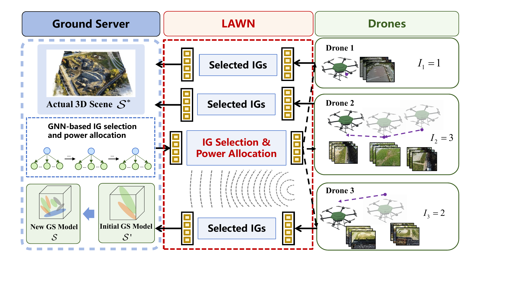

Open source
Released the research code for LAGS / GW-HGNN, alongside cleaned implementations for mixed-discrete wireless resource allocation.
M.Phil. Researcher · HKU ECE
I build learning systems that turn difficult optimization problems into fast, deployable decisions.
I am an M.Phil. student in Electrical and Computer Engineering at The University of Hong Kong, advised by Prof. Yik-Chung Wu. I received my B.E. in Electronic Information Engineering from Beihang University. My research spans learning-based optimization for wireless systems, low-altitude 3D reconstruction, and motion planning in highly dynamic environments.
Based in Hong Kong
Department of Electrical and Computer Engineering
01
Updates
Released the research code for LAGS / GW-HGNN, alongside cleaned implementations for mixed-discrete wireless resource allocation.
LAGS: Low-Altitude Gaussian Splatting with Groupwise Heterogeneous Graph Learning is under major revision at IEEE Transactions on Vehicular Technology.
Our first-author paper on jointly learning antenna positioning and beamforming was accepted by IEEE ICC 2026.
NTK-Guided Implicit Neural Teaching was accepted by CVPR 2026.
HPTune, our collision-free model predictive control work, was accepted by ICASSP 2026.
02
Selected work
* Names in bold indicate Yikun Wang. Publication status reflects the provided CV and public records as of July 2026.
03
Reproducible research

GW-HGNN jointly allocates UAV transmit power and selects valuable image groups for high-fidelity 3D reconstruction at millisecond-scale inference speed.
A policy-gradient positioning network and learned beamformer for mixed discrete-continuous optimization on a 2D antenna grid.
View repositoryDVLN/CVLN code for constraint-aware, sequential UE–AP association and edge-GNN beamforming in scalable cell-free MIMO.
View repository04
Research in view
Beyond the lab
Music, performance,05
Background
M.Phil. in Electrical and Computer Engineering
Advisor: Prof. Yik-Chung Wu · GPA: 4.3 / 4.3
B.E. in Electronic Information Engineering
Academic and competition scholarships
Shenzhen Research Institute of Big Data & Great Bay University
Worked with Prof. Yang Li on cell-free wireless systems, learning-based combinatorial optimization, and vector-quantized CSI compression.